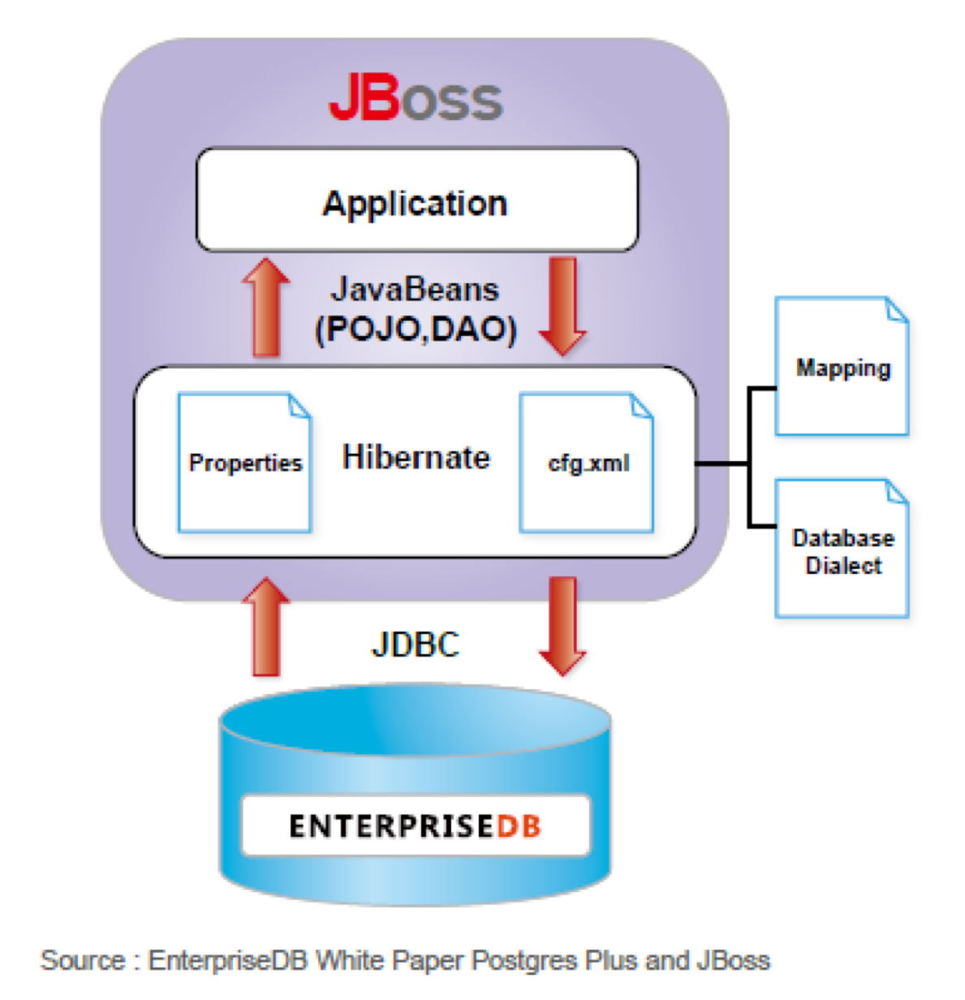
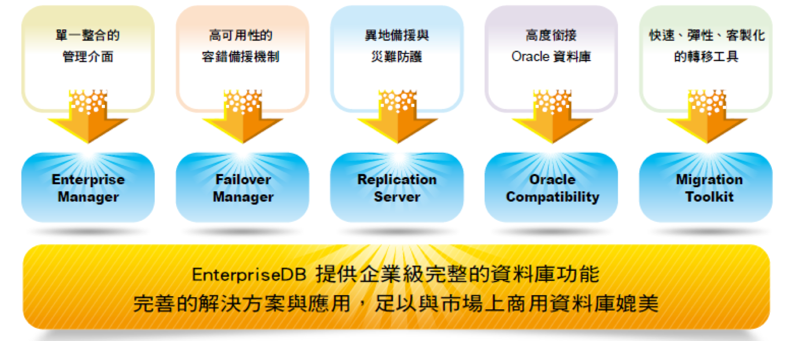

EnterpriseDB
開源軟體新契機 推動企業新未來
選擇EDB的五大主因!!
市場好評連年不斷，提供最有競爭力的優勢:
社群領導者的地位 :PostgreSQL 社群最主要的貢獻者；同時負責許多主要企業級資料庫新功能在PostgreSQL 之開發。
持續成長的功能性 :不斷開發企業資料庫應用功能外，再加上Oracle相容模組，足以支援客戶關鍵系統上的應用需求。
穩定性與相容性 :企業所要求的資料庫穩定性、高可靠度、延展性及產品技術支援皆有傑出的表現。
最佳開源資料庫的選擇:
全球領先的開源資料庫供應商，提供企業級的功能與支援服務
強化安全性、提升效能及易於集中管理
企業級資安認證與安全防護保障機敏資料
可承載大量存取的線上交易需求
節省商用資料庫軟體授權70%~80%的支出
具備商用資料庫所需之功能與相容性，避免被單一廠商綁定
最會節省成本的資料庫:
開源產品的訂閱服務模式，大幅降低企業在資料庫授權及維護上的支出
高度相容Oracle 的功能模組，讓企業的資料庫管理人員避免重複學習
內建多種完善的資料庫進階功能與管理介面，客戶無須負擔額外成本
輕易在既有硬體設備進行整合建置，降低資訊設備重覆投資的機會
與Red Hat Linux 及JBoss 的完美結合
兩家開源軟體領導廠商，藉由各自產品的互補特性，為客戶創造更大的效益與價值
JBoss 與EDB 之間可以透過Hibernate 進行物件關聯式互動，大幅節省程式開發時間
EDB 與Red Hat Linux 及JBoss 能滿足企業大型線上交易系統運作；可靠的架構與穩定的效能已得到多數國際大型企業的採用
最完整的資料庫功能架構
4
1